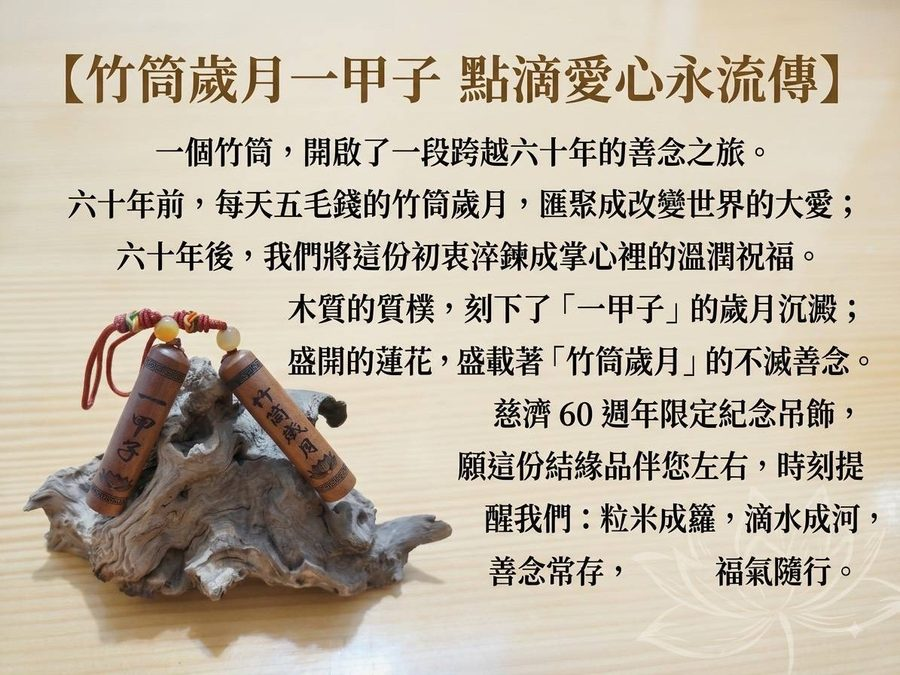
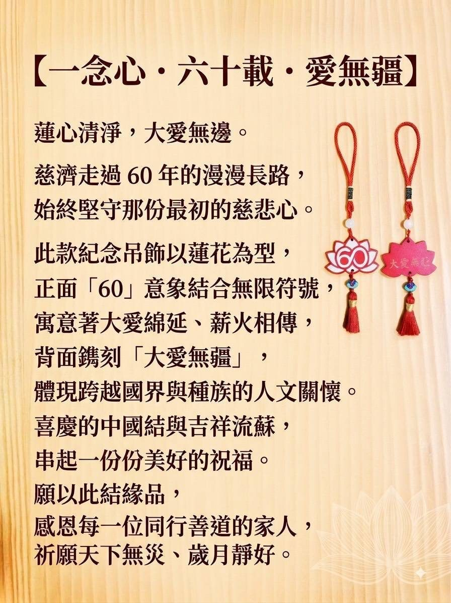
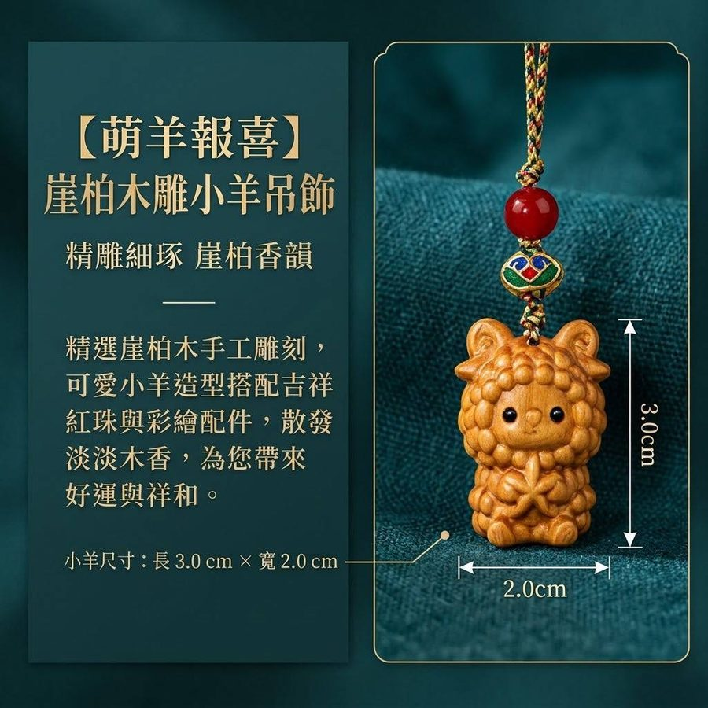
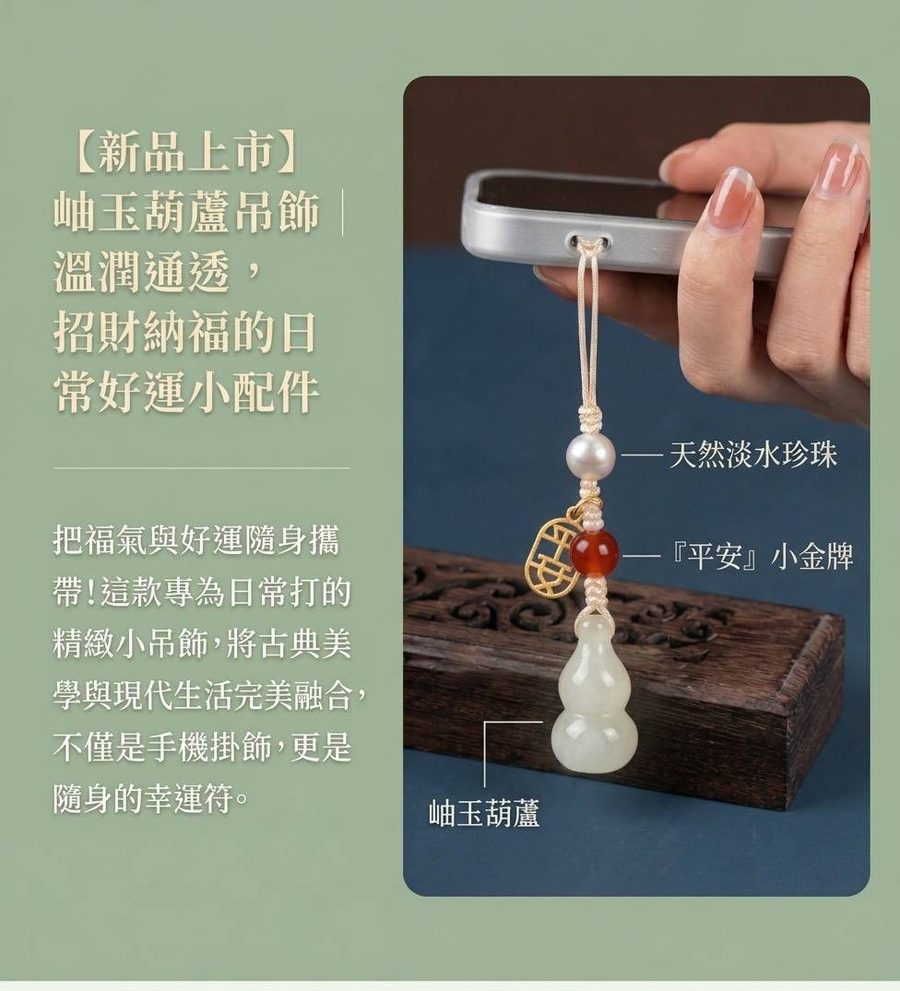
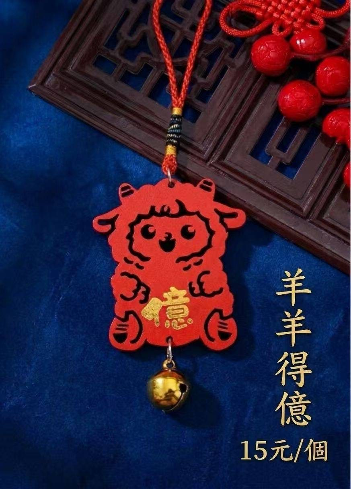

竹筒歲月
$20 / 個
以竹筒為型，木質質樸，刻上「一甲子」與「竹筒歲月」，並以蓮花作為點綴。紀念六十年前每天五毛錢的善念起點。
粒米成籮，滴水成河，善念常存，福氣隨行。
兩款60週年限定紀念吊飾，加上三款羊年吊飾，供大家參考挑選。

以竹筒為型，木質質樸，刻上「一甲子」與「竹筒歲月」，並以蓮花作為點綴。紀念六十年前每天五毛錢的善念起點。

蓮花造型，正面是「60」結合無限符號，寓意大愛綿延、薪火相傳；背面鐫刻「大愛無疆」，搭配中國結與吉祥流蘇。

精選崖柏木手工雕刻，可愛小羊造型搭配吉祥紅珠與彩繪配件，散發淡淡木香。

溫潤通透的岫玉葫蘆，專為日常手機掛飾設計，把福氣與好運隨身攜帶。

紅色小羊造型，胸前燙金「億」字，下方掛著金色小鈴鐺，並以紅繩與中國結點綴，喜氣十足。
圖片僅供參考，實品以現場為準。